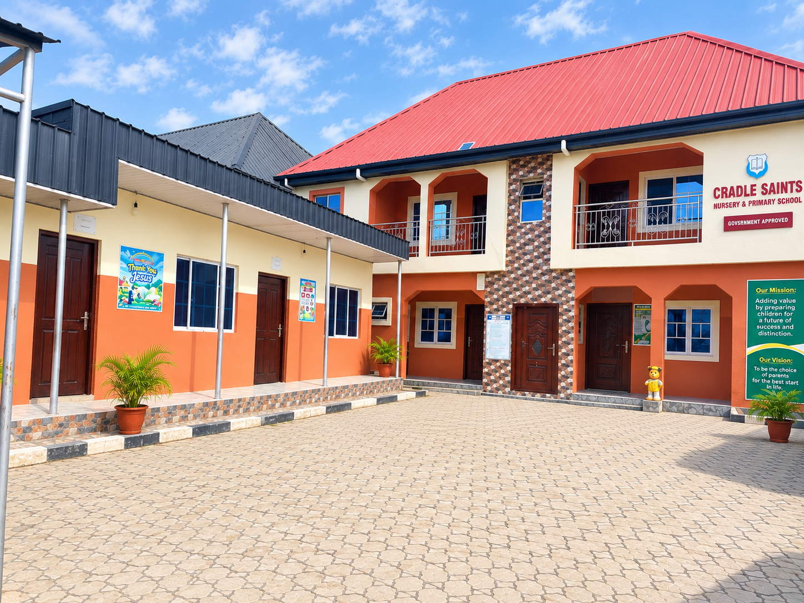

Know who we are and what we stand for.

Cradle Saints Nursery and Primary School is located at No. 4 Chukwujekwu Street, Off Bishop Street, Abuleado, Festac Side, Lagos.
At Cradle Saints, we provide our children with quality education in a welcoming and enabling environment where your children are given perfect care, physically, emotionally and socially using appropriate resources.
Adding value by preparing children for a future of success and distinction.
To be the choice of parents when it comes to giving our children the best start in life.
The values that guide the way we nurture and educate our children.
Having the fear and love of God.
Teaching the truth always.
Encouraging respectfulness and humility.
At Cradle Saints Nursery and Primary School, we are committed to providing quality education in a welcoming and enabling environment where every child is given the care and attention needed to grow.
We believe that education goes beyond academic learning. Our children are cared for physically, emotionally and socially, while being guided by values that encourage the fear and love of God, truth, respectfulness and humility.
Through appropriate resources and a supportive learning environment, we strive to add value to each child's life and prepare them for a future of success and distinction.